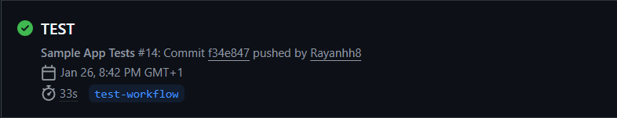
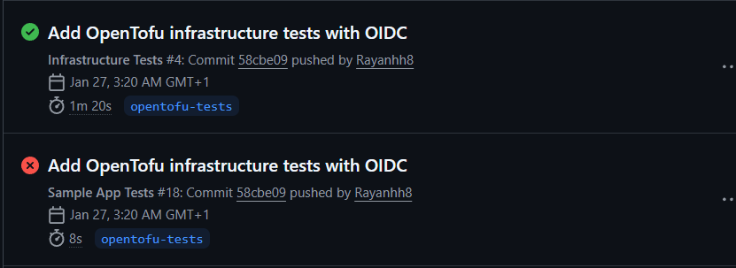

L’objectif de ce TD était de mettre en place une infrastructure serverless sur AWS en utilisant OpenTofu, puis d’automatiser son déploiement et sa validation via GitHub Actions en respectant les bonnes pratiques DevOps (OIDC, rôles IAM, state distant, tests automatisés).
Cette version contient tous les codes créés pendant le TD, mais pas les branches et tests réalisés sur un repo privé.
Une erreur No tests to run apparaissait car le script dans package.json
n’était pas configuré correctement. Il a fallu remplacer par :
"test": "jest"
Le but était de permettre à GitHub Actions d’accéder à AWS sans clés statiques, en utilisant un provider OIDC et des rôles IAM.
Après configuration, le workflow est passé en succès :
L’objectif était d’automatiser le déploiement de l’infrastructure avec OpenTofu via GitHub Actions.
tofu init et applyCe TD a permis de comprendre la mise en place complète d’un pipeline CI/CD avec GitHub Actions et OpenTofu. Nous avons appris à automatiser les tests, sécuriser l’accès à AWS, et déployer une infrastructure de manière reproductible en appliquant les principes DevOps.